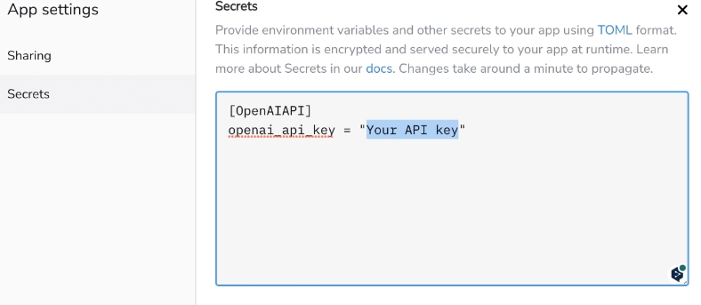

4. ChatGPTとstleamlitでwebappの作成¶
udemyを利用してchatgptAPIとstrealitでwebappを作成する
4.1. OpenAIでAPIを取得¶
openAIのAPIのページから払い出し、API keyを取得
4.2. PythonでAPIへ問い合わせ¶
openaiのライブラリをインストール
!pip install openai
openaiライブラリを利用して、keyを設定したら、設定の記述と質問の記述を設定
model
gpt-3.5-turbo
gpt-4
設定の記述：ChatGPTにどのような設定で回答させるか
質問の記述：ChatGPTへの質問
import openai
openai.api_key = "Your API key"
response = openai.ChatCompletion.create(
model="gpt-3.5-turbo",
messages=[
{"role": "system", "content": "---設定の記述---"},
{"role": "user", "content":"---質問の記述---"}
]
)
# レスポンスの表示
print(response['choices'][0]['message']['content'])
4.3. webappの作成¶
今回のHandsonでは、GoogleColab上でstreamlitを利用して、webappを作成して実行。 ngrokを利用して、このアプリを外部公開している。
4.3.1. ngrok¶
ngrok(エングロック)・・・ローカルサーバーを外部公開するツール
4.3.2. Streamlit¶
Webアプリのフレームワークで、pythonのみで簡単にアプリ構築ができる
ギャラリーに公開されているようなwebappを簡単に作成できる。
4.4. OpenAIのAPIとやり取りするコード¶
以下のコードをapp.pyとして設定。ポイントは以下
messagesにユーザーメッセージと返り値を全て保存する
openaiのapiはリスト形式でメッセージを送れる
リストの中身はroleとcontentの辞書型にしておく
このmessagesを毎回openaiに送っている
systemのRoleは初期で設定している
全部送信しているので、文章が長くなりすぎるとエラーになるor前半切り捨て
web版は多分このapiを利用していて、やり取りの最新部分を送っているだけだと思う。
ちなみに、openai.createの返り値は
{
'message': {
'role': 'assistant',
'content': 'これがモデルの応答です。'
},
のような形式になっているので、messagesはこの形式を踏襲している
messagesの設定でsystemを追加。今後このmessagesにやり取りが追加される
# st.session_stateを使いメッセージのやりとりを保存
if "messages" not in st.session_state:
st.session_state["messages"] = [
{"role": "system", "content": "あなたは優秀なアシスタントAIです。"}
]
ユーザーからのインプットをmessagesに追加
# チャットボットとやりとりする関数
def communicate():
messages = st.session_state["messages"]
user_message = {"role": "user", "content": st.session_state["user_input"]}
messages.append(user_message)
openaiの返り値をmessagesに追加
response = openai.ChatCompletion.create(
model="gpt-3.5-turbo",
messages=messages,
temperature=1.0
)
bot_message = response["choices"][0]["message"]
st.session_state["user_input"] = "" # 入力欄を消去
以下はsteamlitを利用して、画面を作成
# ユーザーインターフェイスの構築
st.title("My AI Assistant")
st.write("ChatGPT APIを使ったチャットボットです。")
user_input = st.text_input("メッセージを入力してください。", key="user_input", on_change=communicate)
if st.session_state["messages"]:
messages = st.session_state["messages"]
for message in reversed(messages[1:]): # 直近のメッセージを上に
speaker = "🙂"
if message["role"]=="assistant":
speaker="🤖"
st.write(speaker + ": " + message["content"])
4.5. webappの公開¶
4.5.1. Streamlit community cloud登録¶
streamlitにアクセスしてサインアップ。 githubアカウントで登録する。
4.5.2. チャットボットコードコード¶
api keyなどはStreamlitのSecretsKeyを利用して参照するので、githubを利用する際も安心
openai.api_key = st.secrets.OpenAIAPI.openai_api_key
リポジトリを作成して、webappのソースコードとrequirementを設定する
4.5.3. streamlitの設定¶
New app > appのデプロイ > repository、branch、app の設定を行う
Deployが失敗したら、apikeyなどのSecretsの設定を行う。 設定から、Secretsを開いて、API_keyの情報を書く
